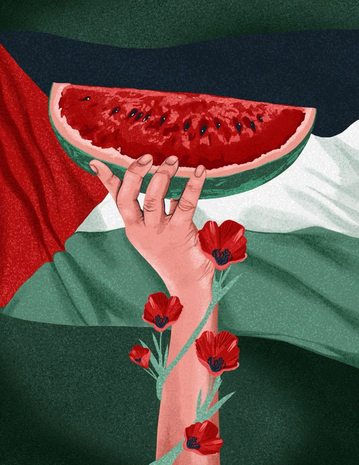

Nakba 1948: Kisah Pengusiran dan Penderitaan Palestina

Pada tahun 1948, terjadi peristiwa dramatis yang mengguncang tanah
Palestina dan merubah nasib ratusan ribu orang Palestina.
Peristiwa ini dikenal sebagai "Nakba," yang dalam bahasa Arab
berarti "bencana" atau "malapetaka." Nakba melibatkan pengusiran
massal warga Palestina dan mendirikan negara Israel, mengakibatkan
penderitaan dan trauma yang masih terasa hingga hari ini.
Setelah berakhirnya Perang Dunia II, PBB menciptakan rencana pembagian Palestina yang dikenal sebagai Resolusi PBB 181 pada tahun 1947. Rencana ini bertujuan untuk membagi wilayah Palestina menjadi dua negara, satu untuk orang Yahudi dan satu lagi untuk orang Arab. Meskipun ditentang oleh mayoritas penduduk Arab Palestina, rencana ini diadopsi oleh PBB.
Pada 14 Mei 1948, David Ben-Gurion, pemimpin Komite Nasional Yahudi, secara resmi mengumumkan berdirinya negara Israel. Sehari setelahnya, tujuh negara Arab melancarkan invasi ke wilayah yang baru berdiri tersebut. Sementara perang antara negara-negara tersebut dan Israel berkecamuk, pengusiran besar-besaran terhadap warga Palestina pun dimulai.
Puluhan ribu warga Palestina mengalami pengusiran dari desa-desa dan kota-kota mereka. Beberapa mengungsi ke kawasan yang masih berada di bawah kendali Palestina, sementara yang lain melarikan diri ke negara-negara tetangga. Banyak dari mereka yang meninggalkan segala harta benda mereka, berharap dapat kembali setelah perang berakhir. Namun, harapan tersebut hanya menjadi kenangan yang pahit. Pengusiran ini disertai dengan tragedi kemanusiaan yang melibatkan pemusnahan desa-desa, pembantaian, dan pelecehan terhadap warga sipil. Sejumlah besar warga Palestina menjadi pengungsi, hidup dalam kamp-kamp sementara yang sulit dan tidak manusiawi. Mereka kehilangan rumah, tanah, dan identitas nasional mereka.
Nakba menciptakan trauma kolektif yang masih terasa hingga hari ini di kalangan masyarakat Palestina. Penderitaan dan kehilangan yang mereka alami menjadi dasar bagi perjuangan terus-menerus untuk hak pengungsi, hak kembali, dan penentangan terhadap pendudukan Israel. Sementara para pengungsi dan keturunannya terus berjuang untuk mendapatkan hak-hak dasar mereka, Nakba juga telah menjadi isu internasional yang kontroversial. Negara-negara Arab dan sebagian besar dunia Arab menolak mengakui Israel dan menuntut hak kembali bagi warga Palestina yang diusir. Sementara itu, masyarakat internasional terus berupaya mencari solusi damai yang adil dan berkelanjutan untuk konflik di Timur Tengah.
Nakba 1948 adalah babak gelap dalam sejarah Palestina yang tetap mempengaruhi dinamika politik dan sosial di kawasan tersebut. Seiring berjalannya waktu, penting bagi komunitas internasional untuk mengakui dan memahami dampak Nakba serta berupaya mencari solusi yang menghormati hak asasi manusia dan keadilan bagi semua pihak yang terlibat dalam konflik ini.
Latar Belakang Sejarah
Setelah berakhirnya Perang Dunia II, PBB menciptakan rencana pembagian Palestina yang dikenal sebagai Resolusi PBB 181 pada tahun 1947. Rencana ini bertujuan untuk membagi wilayah Palestina menjadi dua negara, satu untuk orang Yahudi dan satu lagi untuk orang Arab. Meskipun ditentang oleh mayoritas penduduk Arab Palestina, rencana ini diadopsi oleh PBB.
Pelaksanaan Rencana Pembagian
Pada 14 Mei 1948, David Ben-Gurion, pemimpin Komite Nasional Yahudi, secara resmi mengumumkan berdirinya negara Israel. Sehari setelahnya, tujuh negara Arab melancarkan invasi ke wilayah yang baru berdiri tersebut. Sementara perang antara negara-negara tersebut dan Israel berkecamuk, pengusiran besar-besaran terhadap warga Palestina pun dimulai.
Pengusiran dan Penderitaan
Puluhan ribu warga Palestina mengalami pengusiran dari desa-desa dan kota-kota mereka. Beberapa mengungsi ke kawasan yang masih berada di bawah kendali Palestina, sementara yang lain melarikan diri ke negara-negara tetangga. Banyak dari mereka yang meninggalkan segala harta benda mereka, berharap dapat kembali setelah perang berakhir. Namun, harapan tersebut hanya menjadi kenangan yang pahit. Pengusiran ini disertai dengan tragedi kemanusiaan yang melibatkan pemusnahan desa-desa, pembantaian, dan pelecehan terhadap warga sipil. Sejumlah besar warga Palestina menjadi pengungsi, hidup dalam kamp-kamp sementara yang sulit dan tidak manusiawi. Mereka kehilangan rumah, tanah, dan identitas nasional mereka.
Dampak Jangka Panjang
Nakba menciptakan trauma kolektif yang masih terasa hingga hari ini di kalangan masyarakat Palestina. Penderitaan dan kehilangan yang mereka alami menjadi dasar bagi perjuangan terus-menerus untuk hak pengungsi, hak kembali, dan penentangan terhadap pendudukan Israel. Sementara para pengungsi dan keturunannya terus berjuang untuk mendapatkan hak-hak dasar mereka, Nakba juga telah menjadi isu internasional yang kontroversial. Negara-negara Arab dan sebagian besar dunia Arab menolak mengakui Israel dan menuntut hak kembali bagi warga Palestina yang diusir. Sementara itu, masyarakat internasional terus berupaya mencari solusi damai yang adil dan berkelanjutan untuk konflik di Timur Tengah.
Kesimpulan
Nakba 1948 adalah babak gelap dalam sejarah Palestina yang tetap mempengaruhi dinamika politik dan sosial di kawasan tersebut. Seiring berjalannya waktu, penting bagi komunitas internasional untuk mengakui dan memahami dampak Nakba serta berupaya mencari solusi yang menghormati hak asasi manusia dan keadilan bagi semua pihak yang terlibat dalam konflik ini.